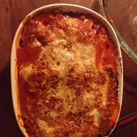

Vinces Lasagna

This is an amazing dish that everyone should know how to make. This lasagna has a cheese filled center surrounded by the famous Vinces sauce that will knock your socks off!
My great grandfather went to the first Vinces Restaurant in Ontario,California 1945. This is one of the few Restaurants that serve authentic Italian food. My family has fallen in love with their spaghetti sauce and cheese. This lasagna combines the sauce and cheese from vinces into a lasagna recipe that my father has created. It has changed the way I viewed italian food and has given a new meaning to me about food creativity.
Ingredients
- 1 box (16 pieces) lasagna pasta
- 3 quarts of Vince's tomatoe sauce
- 1 quart of low-fat cottage cheese
- 1 quart of powdered Vince's Ramano cheese
- 1 pound of shredded mozzarella cheese
Steps
- Boil lasagna noodles for 12 minutes, then strain and run under cool water for 1 minute.
- Pre-heat oven to 400°F.
- Spread thin layer of sauce along the bottom of the pan, and lay four noodles lengthwise overlapping so they cover the bottom. Spread thin layer of sauce over the top of these four noodles and sprinkle thin later of dried cheese.
- Lay four noodles lengthwise overlapping to cover the cheese scoop and spread 1 quart low fat cheese to completely cover the later of noodles. Sprinkle thick later of dried cheese to cover the cottage cheese.
- Lay the last four noodles lenthwise and overlapping. Completely cover with all remaining sauce. Spread the shredded mozzarella cheese to completely cover this layer of sauce.